Hotspot Communication Tracker
Project Overview
This project focused on designing a communication and document management system for Sunnybrook employers and employees. Employers can track training completion, manage documents, and post updates, while employees have a centralized location for required training and receive notifications when new training is assigned. The system improves organization and real-time communication by tracking document status changes such as posting, updating, completion, or holds. The website was built using PHP and JavaScript for the backend, HTML and CSS for the frontend, and an SQL database was used to store neccessary information and was secured against injection through careful handling of the backend code. The website has two main access portals. One for general users and one for administrators. The accessbility on the admin level is the dependent on the role, while general users only have access to the documents they have been assigned.
Approach
Having little to no experience with any of the languages including SQL databases I spent the first month learning all these topics. While learning I began setting up an overall plan of how the system would be designed. The next month and a half were spent developing and testing the backend code through the terminal and setting up all necessary file paths. Once the server was online to run the website the rest of the time was spent testing, debugging, and adding new features. to improve the backend of the site and the overall design. The final few weeks were spent on documentation and final edits to properly setup the project for future use
View Report (PDF) View Code (GitHub)